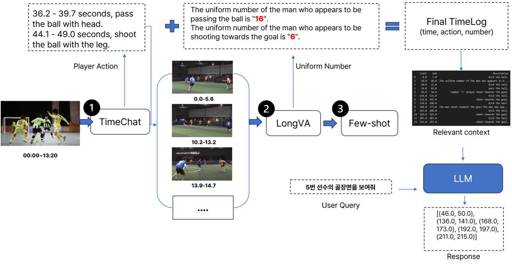

⚽ FIFA: Futsal Identification Focused Analyzer
Chunghyun Shin
1*
,
Myeonggu Jo
2*
,
Sooyong Kim
3*
, and
Jaeung Lee
4†*
1
Yonsei University
2
Hanyang University
3
Seoul National University
4
Sungkyunkwan University
*
deep daiv.
†
Project Lead
Code
데모영상 or파이프라인 추가
Motivation
내용 채우기
Methods

파이프라인설명
BibTex
레퍼런스 추가